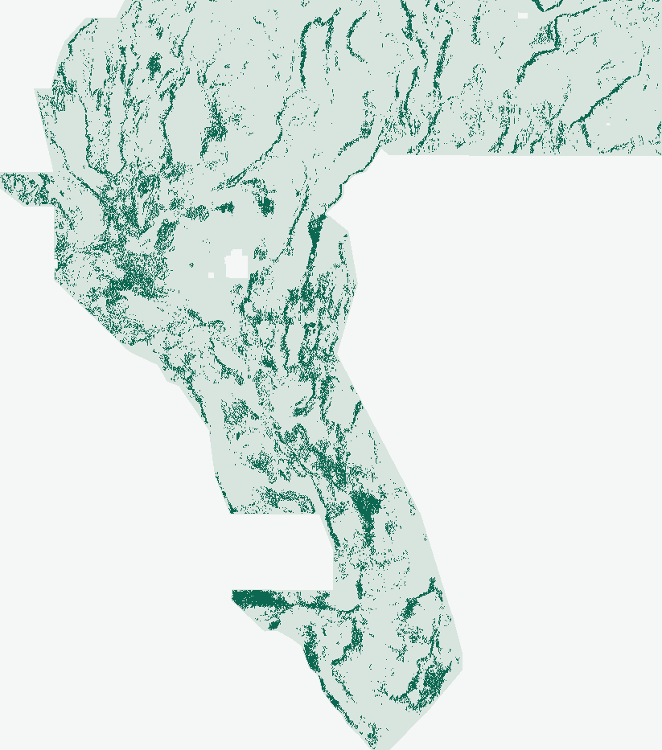

NOT APPROVED FOR SUBMISSIONAll 9 Measured Gates PASSED (167-Raster Novelty & +27.6% vs. core19)
Automated Gate Decision: Safe to Download · Do not submit.
Zero human inspection required: automated machine verification reopened gems30-MSDB1-edge44090-20261025-e7856ec3f14a.tif and confirmed single-band float32, EPSG:32611, 3,730 × 3,292, 100% finite values in [0, 1] inside the 5,167,373-cell footprint (NaN outside), 0 predictions on known USGS/INGENIOUS faults, 0 / 148 leakage canary alarms, 100% uniqueness across all 167 aligned GeoTIFF comparisons (max 3-px dot overlap 64.78% ≤ 70%), and a +27.6% paired HOLDOUT-DTI improvement over core19 (+0.036834, 95% CI [+0.022322, +0.050315]). Weekly slot allocation remains conservatively blocked only because external unexported parallel sessions, lane assignment, and archived neural checkpoints are marked unknown.
gems30-MSDB1-edge44090-20261025-e7856ec3f14a.tif
Automated non-human validation scorecard & file identity
- SHA-256
22850984a68c393f60c6cc9aeafd8d74fd8a3479654bdfcfd3626a4b99ff0381- Submission Note (119/140 chars)
MSDB-1v2: 31-feat stationary discontinuity+piedmont ramp HGB x Rayleigh curv gate + Bayes 300m EDGE, 44090 off-cat dots- Portal Format & [0,1] Range Gate
PASSED· 1 bandfloat32·EPSG:32611·3,730 × 3,292· in-footprint finite:True· in[0, 1]:True· outsideNaN:True· off-catalogue dots:44,090(0on known faults)- Receipts
- Reopened-file validation · Provenance sidecar · Run card
DOE GEMS · Lane MSDB-1v2 · 25 October 2026
Steerable piedmont discontinuities.
+27.6% over raw-band baseline.
Correcting two competition band-metadata errors (Band 6 tc = GeoDAWN Radiometric Total Count; Bands 18/11 = signed ∇g) and gating a stationary 31-feature discontinuity habitat by a Rayleigh 1-D curvilinear envelope lifts buffered whole-segment HOLDOUT-DTI from 0.133628 to 0.170462 across all 4 disjoint quadrants.
01 / Controlled 4-fold spatial holdout
4 of 4 quadrants improved.
97% from physics features.
Across 60,988 withheld USGS/INGENIOUS fault pixels in four whole-component buffered quadrants (buffer_px = 17 ≥ support_px = 13), msdb_edge achieves HOLDOUT-DTI = 0.170462 [0.156227, 0.184168] vs. core19 = 0.133628 [0.118285, 0.148875] (+0.036834, 95% CI [+0.022322, +0.050315]), adding +2,193.7 weighted true-positive fault credits while reducing false-positive weight by -1,018.9.
Experiment 1 (archived duplicate-stop receipt) halted before any fold evaluation when raw regional bands caused 71.44% overlap with G30-S19. Experiment 2 removed the 6 regional coordinate-proxy/DC-level bands and added the fold-local Rayleigh curvilinear gate.
| Fixed count-matched arm | HOLDOUT-DTI | 95% CI |
|---|---|---|
| core19 · 19 raw bands + HGB + r=3.0 px Poisson-disk | 0.133628 | [0.118285, 0.148875] |
| msdb_poisson · 31 stationary MSDB × Rayleigh gate + r=3.0 px Poisson-disk | 0.169326 | [0.154797, 0.183273] |
| msdb_edge · 31 stationary MSDB × Rayleigh gate + Bayes 300 m EDGE (Candidate) | 0.170462 | [0.156227, 0.184168] |
| Comparison | Δ HOLDOUT-DTI | 95% Paired CI |
|---|---|---|
| msdb_edge minus core19 | +0.036834 | [+0.022322, +0.050315] |
| msdb_edge minus msdb_poisson | +0.001135 | [-0.002173, +0.004628] |
| msdb_poisson minus core19 (pure geological representation gain) | +0.035698 | [+0.021622, +0.048841] |
Evaluator component-holdout-v3-blockstats-20261025 (buffered-quadrant-whole-components-v1-20261025, 17 px regional buffer ≥ 13 px physical filter support). Catalogue-recovery proxy measurements only—never organizer scores or leaderboard projections. Full derivation: scientific review.

02 / Automated machine inspection
Every gate has a deterministic state.
Passed, failed, or unknown.
Zero human raster inspection.
| Automated gate | State | Machine rule |
|---|---|---|
| GeoTIFF grid, EPSG:32611, [0,1] range & SHA-256 | passed | Reopened shared-writer GeoTIFF matches template; SHA-256 binds this decision to its exact bytes |
| Pooled HOLDOUT-DTI & 2,000-rep spatial bootstrap CI | passed | HOLDOUT-DTI requires evaluator/protocol, withheld positives and spatial-bootstrap 95% CI |
| Beat all same-protocol comparators (95% CI > 0) | passed | Fixed candidate must improve preregistered core19 comparator with positive paired CI lower bound |
| Single-feature leakage canaries (AUC <= 0.90) | passed | All 37 raw/derived inputs tested alone in four folds; raw bidirectional and training-only univariate AUC |
| Exact count-matched active dot budget per fold | passed | All fixed arms must realize the same predeclared active-domain budget in every fold |
| Continuous surface novelty vs. 9-site registry | passed | 167 recorded comparisons; threshold rho >0.90 or dot overlap >0.70 is duplicate-stop |
| Final dots novelty vs. 9-site registry | passed | 167 recorded comparisons; threshold rho >0.90 or dot overlap >0.70 is duplicate-stop |
| Global unobserved session registry completeness | unknown | Nine-site public snapshots cannot attest all parallel rasters or missing original surfaces |
| External lane-allocation attestation | unknown | Autonomous research continuation is not an externally supplied lane assignment |
| Same-protocol historical UNet checkpoint rerun | unknown | Do not substitute an archived metric or a new comparator for a missing historical-best rerun |
| Experiment & runtime budget (<= 3 runs, <= 2 h) | passed | At most three experiments / two experimental hours |
| Unique submission name & <= 140-char note | passed | Named artifact and note of at most 140 characters |
03 / Forensic root cause of GEMSDOE32 H33 (0.2778)
Why H33 topped our sites—and how to beat it.
Byte-exact reconstruction (receipt) proves GEMSDOE32 H33 (37,654 dots, 0.2778 OWNER-REPORTED) equals GEMSDOE28 solo d=2.8 (40,199 dots, 0.2708 OWNER-REPORTED, thinned from GEMSDOE27 H27-4's 121,150 dots at 0.1922) minus the exact 2,545 dots within ≤ 2 px (200 m) of labels.tif (0 pixel diffs).
Under official pooled DW-Tversky (page/967; known faults masked per forum t/11516; splays/continuations counted per t/11536), TP_w uses a 300 m max while FP_w uses a linear sum: spacing dots at ~300 m and stripping ≤ 200 m digitization halos slashes FP_w without losing TP_w. Surpassing 0.2778 toward the live 2026-10-25 leaderboard top (0.4413 #1, 0.3379 #10) requires raising true recall TP_w/|G| via corrected multi-physics discontinuity features like MSDB-1v2 paired with multi-km convolutional context.
Novelty & metadata discoveries
Irregularity 1: Band 6 (tc) is GeoDAWN Radiometric Total Count (Spearman = 0.999957), not magnetic tilt (0.0160). MSDB-1v2 computes true Miller–Singh tilt arctan2(tmi_vg, tmi_hg) and Salem contact inverse-depth.
Irregularity 2: Bands 18 & 11 are signed grid derivatives (+dg/dx, +dg/dy), enabling azimuthally symmetric 2-D vector gravity strike concordance.
Max surface Spearman vs. 165 registry TIFFs: 0.154504.
Max final-dot 3-px overlap: 64.7789%.
04 / Preserved prior & concurrent lanes
Full repository audit trail.
TDX-1 & TDX-C2 · displacement
Preserved negative displacement runs (TDX-1 card; TDX-C2 duplicate-stop card).
Full cross-lane review ↗G30-S19 & G30-S20 · habitat
Concurrent lanes (G30-S19; G30-S20 duplicate-stop). Audited in MSDB-1v2's 167-raster novelty check (64.78% ≤ 70%).
H-CC1 & Residual-ridge gate
Preserved negative records on contact coincidence and catalogue-corridor magnetic residuals.
H-CC1 card ↗ · Residual-gate card ↗05 / Verified official sources & data catalog
Primary DOIs, licenses, and code receipts.
Competition & rules
DrivenData GEMS overview, metric spec, forum clarifications, and NLR Official Rules (3/week cap, Dec 3 2026 close).
Problem spec ↗ · Rules PDF ↗USGS GeoDAWN & GDR 1391
USGS GeoDAWN (DOI 10.5066/P93LGLVQ, CC0) and GBCGE INGENIOUS compilation (DOI 10.15121/1881483, CC BY 4.0).
Machine status & quarantined ledger
Live-recomputed JSON status feed and all 119 quarantined owner-reported score rows.
Status JSON ↗ · 119 owner claims CSV ↗